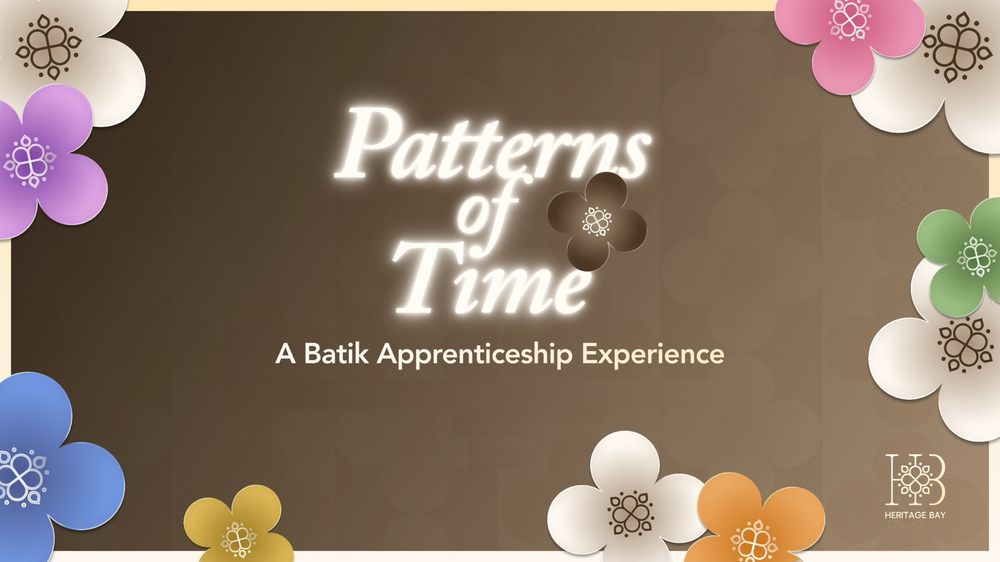

A physical-first batik apprenticeship where young visitors learn the craft, choose an artisan mentor and create a pattern of their own — with the Heritage Bay app tracking every step.
STUDENT WORK · SHARED AS A LEARNING REFERENCE

CLIENT
Heritage Bay
FORMAT
Apprenticeship experience + app
KEY MECHANIC
Digital Apprentice Card and film roll
DELIVERABLES
Deck · journey map · proposal · Figma
01 / OVERVIEW
The thinking.
From the gap they found to the experience they proposed.
01 / THE GAP
The challenge
In Assignment 2, the Patterns of Time story game made heritage interactive — but the game became the main event, overshadowing the physical craft.
The team also found that rewards could pull attention away from heritage values, and the app had no long-term purpose or path to Heritage Bay products.
02 / THE IDEA
The proposal
The refined idea puts the craft first. Visitors download the Heritage Bay app, receive a digital Apprentice Card and a film roll, then explore batik motifs, tools and techniques at physical stations.
They choose an artisan mentor by scanning a QR code, design their own pattern, and scan it to see it projected. Kora, a friendly mascot named after the Indonesian word “corak” (pattern), guides the journey.
03 / THE VALUE
Why it works
Learning by doing: batik is experienced hands-on, not just consumed on screen.
A voting board shows which patterns visitors prefer, giving Heritage Bay real customer insight.
The app stays useful after the campaign as a home for artisan stories, the story game and products.
02 / JOURNEY
How it unfolds.
The experience, step by step.
01EnterDownload the Heritage Bay app and receive a digital Apprentice Card.
02DiscoverCollect a film roll to document the apprenticeship.
03LearnExplore batik patterns, tools and process at physical displays.
04CreateUse a template to design a batik-inspired pattern.
05PractisePut new skills to work, then scan the design to project it.
06ContinueLeave with a film roll and bag; keep exploring through the app.
03 / VISUALS
Selected slides.
Select a slide to enlarge it. The full deck is under Files.
P.05The original idea from Assignment 2P.10The refined, physical-first ideaMAPPhygital journey mapP.13Physical experience journeyP.16Physical touchpoints brought to lifeP.17Patterns of Meaning voting boardP.23Prototype: choose your mentorP.25Prototype: create and project
FOR LEARNERS
What to look for.
The honest critique of their own Assignment 2 work, and how each insight shaped the refinement.
Kora the mascot as a brand device that makes heritage feel approachable.
Business value built into the experience, such as the voting board’s customer insight.
04 / PROTOTYPE
Try the prototype.
The team’s Figma file, with the screens and interactions behind the experience. It opens in Figma in a new tab; you may need to sign in to view it.